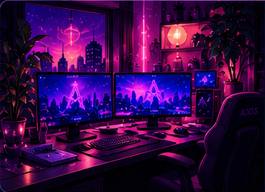

ProjetosMeu espaço, meus projetos e tudo que me inspira
Esse diário nasceu porque eu nunca consegui me enxergar em uma categoria só. Tem tecnologia, projetos, games, beleza, conteúdo, ideias aleatórias e vida real — e tudo isso faz parte de mim.
Por muito tempo meu trabalho esteve ligado à beleza e ao meu próprio estúdio. Depois a curiosidade por tecnologia começou a ocupar cada vez mais espaço. Eu não virei programadora do nada: comecei tendo ideias, imaginando telas, fluxos e funções e tentando descobrir como transformar aquilo em algo que realmente funcionasse.
O Diário de uma Curiosa é para registrar esse processo sem fingir que tudo já está pronto. Quero mostrar ideias, testes, coisas que dão certo, as que dão errado e o que vou aprendendo no caminho. 💜
Este conteúdo fica em uma página própria e pode ser editado diretamente no arquivo deste post no GitHub.